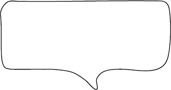
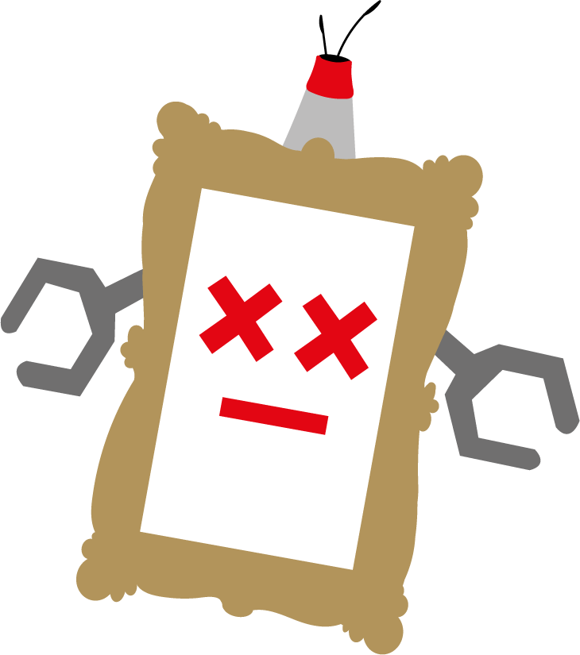

Ontdek de unieke wereld van de rijkswachters. Rijkswachters zijn robotfiguren gemaakt van gerecyclede hout.
Het rijksmuseum werd gerenoveerd van 2003 tot 2013 waardoor de schilderijen jarenlang werden beschermd in
transportkisten. Toen de renovatie aan een eind begon te komen waren er veel transport kisten over. Daaruit
zijn nu robotfiguren gemaakt. Hartstikke duurzaam!

